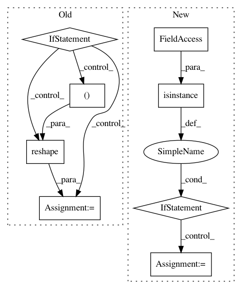

d37d08d9b2a806b3345fba41711c0d517b92a65c,chainercv/links/model/vgg/vgg16.py,VGG16Layers,predict,#VGG16Layers#Any#,215
Before Change
imgs = chainer.Variable(imgs)
y = self(imgs).data
if self.do_ten_crop:
n = y.shape[0] // 10
y_shape = y.shape[1:]
y = y.reshape((n, 10) + y_shape)
y = self.xp.sum(y, axis=1) / 10
return cuda.to_cpu(y)
def _max_pooling_2d(x):
After Change
imgs = chainer.Variable(imgs)
activations = self(imgs)
if isinstance(activations, dict):
for name, activation in activations.items():
activation = activation.data
if self.do_ten_crop:
activation = self._gather_ten_crop(activation)
activations[name] = cuda.to_cpu(activations)
else:
activations = cuda.to_cpu(activations.data)
if self.do_ten_crop:
activations = self._gather_ten_crop(activations)
return activations
def _gather_ten_crop(self, y):
xp = chainer.cuda.get_array_module(y)
In pattern: SUPERPATTERN
Frequency: 3
Non-data size: 8
Instances
Project Name: chainer/chainercv
Commit Name: d37d08d9b2a806b3345fba41711c0d517b92a65c
Time: 2017-06-15
Author: yuyuniitani@gmail.com
File Name: chainercv/links/model/vgg/vgg16.py
Class Name: VGG16Layers
Method Name: predict
Project Name: nilearn/nilearn
Commit Name: 75b5bf37c2f9f23751b25d5b246b0d01e0330728
Time: 2020-10-21
Author: bertrand.thirion@inria.fr
File Name: nilearn/glm/first_level/design_matrix.py
Class Name:
Method Name: make_first_level_design_matrix
Project Name: apache/incubator-mxnet
Commit Name: dd44c0c3bc168b3e88cda22c443283894fd24c54
Time: 2020-09-21
Author: lausen@amazon.com
File Name: python/mxnet/symbol/numpy/_symbol.py
Class Name: _Symbol
Method Name: __getitem__